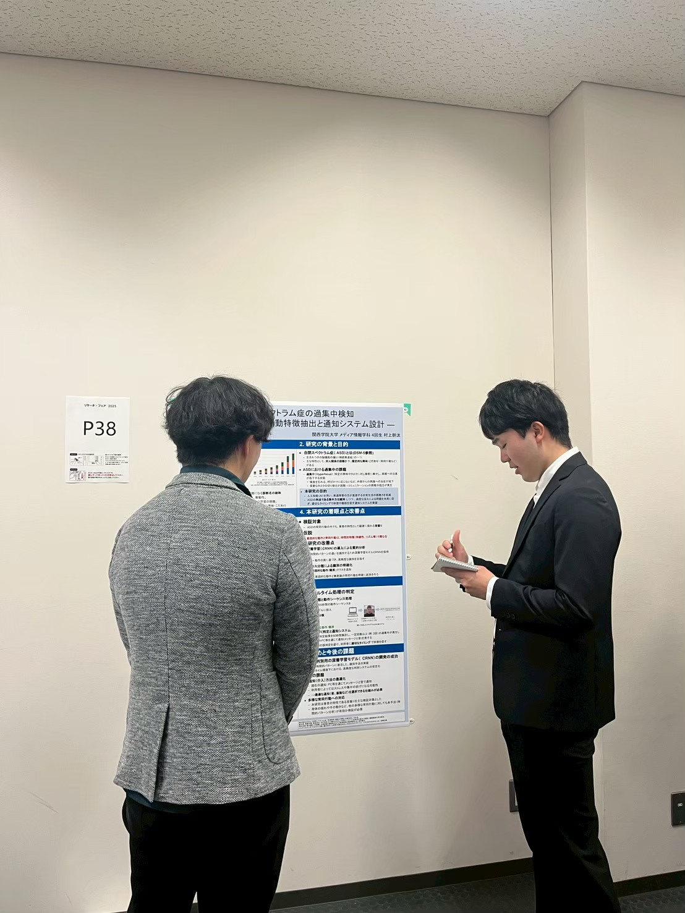
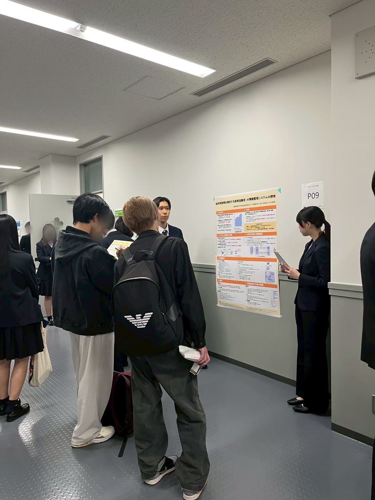
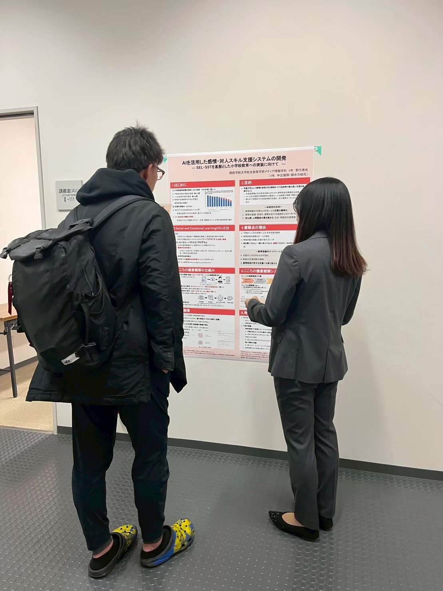

関西学院大学 総合政策学部 リサーチ・フェアに参加
大用ゼミから3チームが研究成果を発表
関西学院大学 総合政策学部・総合政策研究科では、2025年11月14日（金）、「リサーチ・フェア」が開催されました。大用ゼミからは3チームが出展し、それぞれの専門分野に根ざした研究成果を発表しました。

▲ 村上幹汰さんの研究発表の様子
村上幹汰さんは、「自閉スペクトラム症の過集中検知 ― 深層学習による行動特徴抽出と通知システム設計」というテーマで発表しました。ASD傾向を持つ人が過集中状態に陥った際の無意識の常同行動を、深層学習モデル（CRNN）を用いて検知し、適切なタイミングで通知するシステムを開発。前年度の研究をさらに発展させ、意図的な動作と無意識の常同行動を区別する手法を導入し、検証では94.6%の正答率を達成しました。

▲ 井坂彩乃さんと中辻優翔さんの研究発表の様子
井坂彩乃さんと中辻優翔さんのチームは、「短時間診察を補完する家族協働型AI情報整理システムの開発」を発表しました。精神科診療の短い診察時間を補うため、対話AIが家族から日常の様子を個別に聞き取り、AIが情報を整理・要約して診察支援レポートを作成する仕組みを提案。音声対話・RAG技術・診察前情報整理を組み合わせたシステムです。

▲ 野方美佐さんの研究発表の様子
野方美佐さん（中辻優翔さん・諸井万結花さんと共同）は、「AIを活用した感情・対人スキル支援システムの開発 ― SEL・SSTを基盤とした小学校教育への実装に向けて」を発表しました。児童が日々の気持ちを紙に記入し、それをシステムが読み取って教員の支援判断を助ける「こころの健康観察」のデジタル化を提案。岡山県備前市の小学校での実証も踏まえた研究です。

▲ ゼミメンバーの写真
大用ゼミでは、学生一人ひとりの興味関心を尊重しながら、学際的なアプローチで社会課題の解決を目指しています。今後も、学生たちの多様な挑戦に注目が集まりそうです。